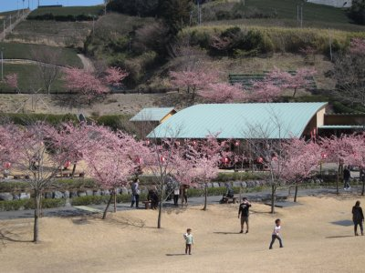
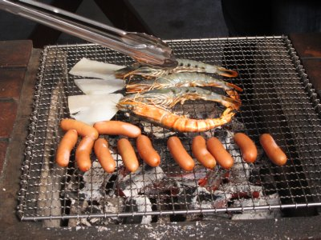
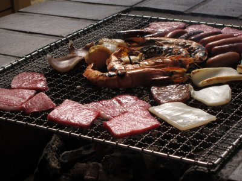
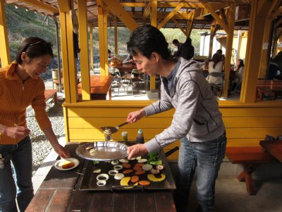
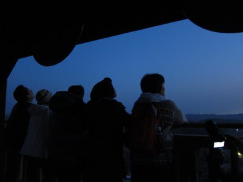
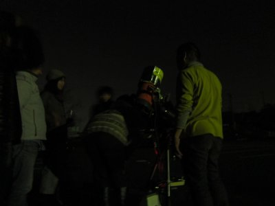

| パンスターズ彗星とBBQ | 2013年3月 幹事：Ryuu |
|---|---|
| パンスターズ彗星を見よう！と、星が大好きなRyuuさんが誘ってくれました。 ついでにバーベキューなんてどう？と、施設利用ながらバーベキューも決定。参加者は7名だったかな？ 場所は昼過ぎに「あらさわふる里公園」（御前崎市）へ集合。ここで遅い昼食バーベキューをします。 公園は紅桜が見頃を迎え、園内をピンク色に染めています。ちょっと早めの花見かな。 | |
|  ここが「あらさわふる里公園」 |  紅桜が綺麗ですね |
| バーベキューは施設ですべて用意するので、手ぶらでOK。楽ちんです。 ここの夢咲牛美味しかった〜 黒毛和牛で正式には遠州夢咲牛（えんしゅうゆめさきぎゅう）と言うそうです。 出荷頭数が少ないようで、余り出回っていないようですが、静岡県西部方面のお店で食べさせて貰えるようです。 バーベキューではもったいない気もしますが、炭焼きですから良い味でますよ！ | |
 結構食材多いです |  ソーセージも海老ちゃんも美味しそう |
|  手前の肉が遠州夢咲牛です。美味いよ |  美味しいからガッツリですよね |
|  野菜もしっかり食べましょう |  子供にも大人気 |
| バーベキューの後は、園内のベンチでコーヒー集会。夕暮れが見頃のパンスターズ彗星を待ちます。 陽が暮れかけた頃、園内の高台にある展望台に登り、西の空を睨みます。 段々と暗くなり、見頃の時間となったはずですがパンスターズ彗星は発見できず。 残念だけど彗星は諦め、駐車場に戻って普通に天体観測に移行。 ここで、Ryuuさんご自慢の口径２０ｃｍ望遠鏡が登場です。一度セットすれば自動で見たい星をセットしてくれる優れものです。 この日も、木星や星雲・星団を見せていただきました。素晴らしかった。 彗星は残念だったけど、美味しいバーベキューと天体観測で二重丸でした！ | |
|  展望台にてパンスターズ彗星を・・・ |  望遠鏡で星見会 |
| 写真＆コメント ｂｙ べっしー | |